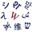

Pikachu
| Pikachu | |
|---|---|
| Pokémon character | |
 Pikachu, as depicted in promotional artwork for Pokémon FireRed and LeafGreen. | |
| First appearance |
|
| Designed by | |
| Portrayed by |
|
| Voiced by | |
| In-universe information | |
| Species |
|
| Gender | ♂ Male / ♀ Female |
| Fighting style | Electric type |
| Origin | Kanto (Generation I) |
Pikachu[c] is a species of Pokémon, fictional creatures that appear in an assortment of media of the Pokémon franchise by The Pokémon Company. Pikachu is a yellow mouse-like Pokémon with powerful electrical abilities. In most vocalized appearances, including the anime and certain video games, it is primarily voiced by Ikue Ōtani. A Pikachu also appears as part of the main cast in the live-action animated film Pokémon Detective Pikachu, played in CGI and voiced by Ryan Reynolds.
Pikachu's design was conceived by Atsuko Nishida and finalized by Ken Sugimori.[2] Pikachu first appeared in Pokémon Red and Green in Japan, and later in the first internationally released Pokémon video games, Pokémon Red and Blue, for the Game Boy.
Pikachu is the best-known species of Pokémon, largely due to its appearance in the anime series as the starter Pokémon of the protagonist, Ash Ketchum. Pikachu is a major character of the Pokémon franchise as well as its mascot, and has become an icon of Japanese pop culture in recent years, as well as one of the major mascots for Nintendo.
Concept and design

Developed by Game Freak and published by Nintendo, the Pokémon series began in Japan in 1996, and features several species of creatures called "Pokémon" that players, called "trainers", are encouraged to capture, train, and use to battle other players' Pokémon or interact with the game's world.[3] Pikachu was one of several different Pokémon designs conceived by Game Freak's character development team. Artist Atsuko Nishida is credited as the main person behind Pikachu's design,[4][5] which was later finalized by artist Ken Sugimori.[6][7] According to series producer Satoshi Tajiri, the name is derived from a combination of two Japanese onomatopoeia: ピカピカ (pikapika), a sparkling sound, and チュウチュウ (chūchū), a sound a mouse makes.[8] Despite its name's origins, however, Nishida based Pikachu's generation 1 design, especially its cheeks, on squirrels.[9] Developer Junichi Masuda noted Pikachu's name as one of the most difficult to create, due to an effort to make it appealing to both Japanese and American audiences.[10]
Standing 40 centimetres (1 ft 4 in) tall, Pikachu was the first "Electric-type" Pokémon created, their design intended to revolve around the concept of electricity.[11] They appear as Pika-like[12] creatures that have short, yellow fur with brown markings covering their backs and parts of their lightning bolt-shaped tails. They have black-tipped, pointed ears and red circular pouches on their cheeks, which can spark with electricity.[13] In Pokémon Diamond and Pearl, gender differences were introduced; a female Pikachu now has an indent at the end of its tail, giving it a heart-shaped appearance. They attack primarily by projecting electricity from their bodies at their targets. Within the context of the franchise, a Pikachu can transform, or "evolve," into a Raichu when exposed to a "Thunder Stone." In later titles an evolutionary predecessor was introduced named "Pichu", which evolves into a Pikachu after establishing a close friendship with its trainer.
Initially both Pikachu and the Pokémon Clefairy were chosen to be lead characters for the franchise merchandising, with the latter as the primary mascot to make the early comic book series more "engaging". However, with the production of the animated series, Pikachu was chosen as the primary mascot, in an attempt to appeal to female viewers and their mothers, and because it was believed that Pikachu presented the image of a recognizable intimate pet to children. Its color was also a deciding factor, as yellow is a primary color and easier for children to recognize from a distance, and with consideration to the fact that the only other competing yellow mascot at the time was Winnie-the-Pooh.[14] Though Tajiri acknowledged that the character was relatively popular with both boys and girls, the idea of Pikachu as the mascot was not his own, with the company responsible for the production of the animated series OLM, Inc. giving the suggestion to utilize Pikachu's potential to Game Freak, and stated he felt the human aspect of the series was overlooked by Japanese children who embraced Pikachu by itself more readily.[15][16] Pikachu was originally going to have a second evolution called Gorochu, which was intended to be the evolved form of Raichu.[17][18]
Pikachu's design has evolved from its once-pudgy body to having a slimmer waist, straighter spine, and more defined face and neck; Sugimori has stated these design changes originated in the anime, making Pikachu easier to animate, and were adopted to the games for consistency.[19] "Fat Pikachu" was revisited in Pokémon Sword and Shield, where Pikachu received a Gigantamax Form resembling its original design.[20][21][22] With that Gigantamax Form, Pikachu gains access to the G-Max Move G-Max Volt Crash, which paralyzes all opponents.
Appearances
In video games
{kind=link}
In the video games, Pikachu is a Pokémon which has appeared in all of the games, except Black and White, without having to trade.[23] The game Pokémon Yellow features a Pikachu as the only available Starter Pokémon. Based on the Pikachu from the Pokémon anime, it refuses to stay in its Poké Ball, and instead follows the main character around on screen. The trainer can speak to it and it displays different reactions depending on how it is treated.[24] Pokémon Yellow followed the anime series closely, with Pikachu as a central character.[25] Pokémon Let's Go, which is based heavily on Yellow, has Pikachu as a starter in one of its two versions, with the latter version using Eevee instead.[26] This starter Pikachu has access to several secret techniques and exclusive moves.[27][28]
In Pokémon Emerald, Pikachu and its evolutionary family gained Volt Tackle as a signature move, learned by the Pichu hatched from an Egg made by a Pikachu or Raichu holding a Light Ball.[29] It can also be learned by Pikachu directly through events and tutors. An event from April 1 to May 5, 2010 allowed players of Pokémon HeartGold and SoulSilver to access a route on the Pokéwalker which solely contained Pikachu which knew attacks that they were not normally compatible with, Surf and Fly.[30] Both of these attacks can be used outside battles as travel aids. Seven "Cap" forms of Pikachu, wearing caps belonging to Ash Ketchum across different seasons, were released across Pokémon Sun and Moon as well as their Ultra versions.[31] These games also released two Z-Crystals exclusive to Pikachu: Pikanium Z, which upgrades Volt Tackle into Catastropika, and Pikashunium Z,[32] which upgrades Thunderbolt into 10,000,000 Volt Thunderbolt when held by a Cap form of Pikachu.[33] Gigantamax Pikachu has access to the unique G-Max Move Volt Crash, which deals damage and paralyzes all opponents on the field.[20]
Aside from the main series, Pikachu stars in Hey You, Pikachu! for the Nintendo 64.[34] The player interacts with Pikachu through a microphone, issuing commands to play various mini-games and act out situations. The game Pokémon Channel follows a similar premise of interacting with the Pikachu, though without the microphone.[35] Pikachu appear in almost all levels of Pokémon Snap, a game where the player takes pictures of Pokémon for a score. A Pikachu is one of the sixteen starters and ten partners in the Pokémon Mystery Dungeon games. PokéPark Wii: Pikachu's Adventure features a Pikachu as the main protagonist.[36] Pikachu has also appeared in all five Super Smash Bros. games as a playable character.[37] Pikachu is an amiibo character. Pikachu appears as a playable fighter in Pokkén Tournament, along with "Pikachu Libre", based on "Cosplay Pikachu" from Omega Ruby and Alpha Sapphire.[38][39] Detective Pikachu features a talking Pikachu who becomes a detective and helps to solve mysteries.[40]
In anime

The Pokémon anime series and films feature the adventures of Ash Ketchum and his Pikachu, traveling through the various regions of the Pokémon universe. They are accompanied by a group of alternating friends, including Misty, Brock, Tracey, May, Max, Dawn, Iris, Cilan, Bonnie, Serena, Clemont, Lillie, Kiawe, Mallow, Lana, Sophocles, and Goh.
In the first episode, Ash Ketchum, a young boy from Pallet Town, turns 10 years old and is ready to acquire his first Pokémon. Hopeful to become a Pokémon Master, the night before he receives his starter Pokémon (either Squirtle, Charmander or Bulbasaur) he has a dream where he is catching a Pokémon and actually, while sleeping, physically breaks his alarm clock (designed like a Poke Ball). Ash quickly runs to Professor Oak's lab, where he finds out all the starter Pokémon have been given away. Professor Oak tells Ash there is one more Pokémon, a male Pikachu. At first, Pikachu largely ignores Ash's requests, shocking him frequently and refusing to be confined to the conventional method of Pokémon transportation, a Poké Ball. However, Ash puts himself in danger to defend Pikachu from a flock of wild Spearow,[41] then rushes the electric mouse to a Pokémon Center. Through these demonstrations of respect and unconditional commitment to Pokémon, Pikachu warms up to Ash, and their friendship is formed. However, he still refuses to go into his Poké Ball. Soon after, Pikachu shows great power that sets him apart from other Pokémon, and other Pikachu, which causes Team Rocket to constantly attempt to capture him in order to win favor from their boss, Giovanni.[42] Only once had Ash almost released Pikachu, and that was in the episode "Pikachu's Goodbye", because Ash thought Pikachu would be happier living in a colony of wild Pikachu, but Pikachu chose him instead.[43]
Other wild and trained Pikachu appear throughout the series, often interacting with Ash and his Pikachu. The most notable among these is Ritchie's Pikachu, Sparky.[44] Like most other Pokémon, Pikachu communicates only by saying syllables of his own name. He is voiced by Ikue Ōtani in all versions of the anime. In Pokémon Live!, the musical stage show adapted from the anime, Pikachu was played by Jennifer Risser,[45] but remained voiced by Ikue Ōtani.
In film
In the 2019 film Pokémon Detective Pikachu, a detective Pikachu is voiced by Ryan Reynolds and Ōtani.[citation needed]
In other Pokémon media
Pikachu is one of the main Pokémon used in many of the Pokémon manga series. In Pokémon Adventures, main characters Red and Yellow both train Pikachu, which create an egg that Gold hatches into a Pichu. Other series, including Magical Pokémon Journey and Getto Da Ze also feature Pikachu while other manga series, such as Electric Tale of Pikachu,[46] and Ash & Pikachu, feature the most well known Pikachu belonging to Ketchum in the anime series.[46]
Collectible cards featuring Pikachu have appeared since the initial Pokémon Trading Card Game released in October 1996, including limited edition promotional cards. One of these collectible cards was "Pikachu Illustrator", limited to about 20-40 printed in 1998, and was auctioned off for about $55,000 in 2016.[47] The character has also been used in promotional merchandising at fast-food chains such as McDonald's, Wendy's and Burger King.[48][49][50][51]
Promotion and legacy
{kind=link}
_in_Pok%C3%A9mon_livery.jpg)
As the mascot of the franchise, Pikachu has made multiple appearances in various promotional events and merchandise. In 1998, then Topeka, Kansas Mayor Joan Wagnon renamed the town "Topikachu" for a day,[52] and a "got milk?" advertisement featured Pikachu on April 25, 2000.[53] A Pikachu balloon has been featured in the Macy's Thanksgiving Day Parade since 2001.[54][failed verification] The original balloon was flown for the last time publicly at the Pokémon: Tenth Anniversary "Party of the Decade" on August 8, 2006 in Bryant Park in New York City,[55][56][57][58] and a new Pikachu balloon that chases a Poké Ball and has light-up cheeks debuted at the 2006 parade.[59] In the 2014 parade, a new Pikachu balloon was wearing a green scarf and holding a smaller Pikachu snowman.[60]
During the first episode of the 11th season of Top Gear, presenter Richard Hammond compared an image of the Tata Nano to one of Pikachu, stating, "they've saved money on the styling 'cause they've just based it on this."[61] In the episode "Dual" of the third season of Heroes, Hiro Nakamura is nicknamed "Pikachu" by Daphne Millbrook, much to his chagrin. He is called this again by Tracy Strauss, after which he excuses himself before punching her in the face.[62][63] A Pikachu spoof called Ling-Ling was a main character in the Comedy Central show Drawn Together. An image of Pikachu has also been featured on the ANA Boeing 747-400 (JA8962).[64]
Pikachu has appeared several of times on The Simpsons. In the 2002 episode "Bart vs. Lisa vs. the Third Grade", Bart Simpson has a hallucination while taking a test in class and envisages his classmates as various television characters, one of which is Pikachu.[65] Maggie Simpson appeared as a Pikachu in a couch gag during the opening sequence of the 2003 episode "'Tis the Fifteenth Season".[66] The couch gag was used a second time for the 2004 episode "Fraudcast News".[67] In the 2010 episode "Postcards from the Wedge", Bart is distracted from his homework by an episode of Pokémon. After watching Ash Ketchum talk to his Pikachu, he muses how the show has managed to stay fresh over the years.[68]
Pikachu was ranked as the "second best person of the year" by Time in 1999, who called it "the most beloved animated character since Hello Kitty". The magazine noted Pikachu as the "public face of a phenomenon that has spread from Nintendo's fastest selling video game to a trading-card empire", citing the franchise's profits for the year as "the reason for the ranking", behind singer Ricky Martin but ahead of author J.K. Rowling.[69] The character was ranked eighth in a 2000 Animax poll of favorite anime characters.[70] In 2002, Ash's Pikachu received 15th place in TV Guide's 50 greatest cartoon characters of all time.[71] GameSpot featured it in their article "All Time Greatest Game Hero".[72] In 2003, Forbes ranked Pikachu as the "eighth top-earning fictional character of the year" with an income of $825 million.[73] In 2004, the character dropped two spots to tenth on the list, taking in $825 million for a second straight year.[74] In a 2008 Oricon poll, Pikachu was voted as the fourth most popular video game character in Japan, tying with Solid Snake.[75] The character has been regarded as the Japanese answer to Mickey Mouse[76] and as being part of a movement of "cute capitalism".[64] Pikachu was listed 8th in IGN's "Top 25 Anime Characters of All Time".[77] Nintendo Power listed Pikachu as their ninth favourite hero, stating that while it was one of the first Pokémon, it is still popular to this day.[78] Authors Tracey West and Katherine Noll called Pikachu the best Electric-type Pokémon and the best Pokémon overall. They added that if a person were to go around and ask Pokémon players who their favourite Pokémon was, they would "almost always" choose Pikachu. They also called Pikachu "brave and loyal".[79] On a less positive note, Pikachu was ranked first in AskMen's top 10 of the most irritating 1990s cartoon characters.[80] Similarly, in a poll conducted by IGN, it was voted as the 48th best Pokémon, with the staff commenting "despite being the most recognized Pokémon in the world... Pikachu ranks surprisingly low on our top 100".[81] In 2011, readers of Guinness World Records Gamer's Edition voted Pikachu as the 20th-top video game character of all time.[82]
A newly discovered ligand believed to provide better visual acuity, discovered by Osaka Bioscience Institute Foundation (大阪バイオサイエンス研究所), is named "Pikachurin", borrowed from the nimbleness of Pikachu.[83] The name was inspired due to Pikachu's "lightning-fast moves and shocking electric effects".[84]
Pikachu and ten other Pokémon were chosen as Japan's mascots in the 2014 FIFA World Cup.[85] In August 2017, The Pokémon Company had partnered with Snap Inc. to bring Pikachu to the social media app, Snapchat.[86] Manga author Hiro Mashima referred to Pikachu as "the greatest mascot character of all time!" when talking about adding these types of characters to series.[87]
See also
- Pikachu (sculpture), New Orleans
Notes
- ^ episode 67
- ^ episode 78
- ^ Japanese: ピカチュウ, Hepburn: Pikachū, pronounced [pikatɕɯː], English: /ˈpiːkətʃuː/
References
Citations
- ^ "ニュース｜映画『名探偵ピカチュウ』公式サイト". movie-news.jp (in Japanese). May 3, 2019. Retrieved May 9, 2019.
- ^ "'Pokemon' Designers Reveal The Secret Behind Pikachu's Creation". GAMING. Retrieved 2020-03-11.
- ^ Game Freak (1998-09-30). Pokémon Red and Blue, Instruction manual. Nintendo. pp. 6–7, 11.
- ^ Sarkar, Samit (May 29, 2013). "Harvest Moon creator's Hometown Story leads Natsume's E3 slate". Polygon. Vox Media. Retrieved March 7, 2016.
- ^ Bailey, Kat (September 16, 2015). "The New Zygarde Form is a Reminder of How Hard it is to Design a Good Pokémon". USGamer.net. Gamer Network. Retrieved March 7, 2016.
- ^ Staff. "2. 一新されたポケモンの世界". Nintendo.com (in Japanese). Nintendo. p. 2. Retrieved 2010-09-10.
- ^ Stuart Bishop (2003-05-30). "Game Freak on Pokémon!". CVG. Archived from the original on 2008-01-16. Retrieved 2008-02-07.
- ^ "The Ultimate Game Freak". Time Asia. 154 (20): 2. November 22, 1999. Archived from the original on 2010-05-01. Retrieved September 25, 2009.
- ^ "Pikachu Wasn't Based On A Mouse, But A Squirrel". Kotaku.
- ^ Noble, McKinley (2009-03-23). "Pokemon Platinum: Developer Interview!". GamePro. Archived from the original on 2009-03-27. Retrieved 2009-06-09.
- ^ 『ポケットモンスター』スタッフインタビュー (in Japanese). Nintendo. Retrieved June 6, 2009.
- ^ "Pika vs Pikachu". apps.voxmedia.com. Retrieved 2021-01-15.
- ^ Pokédex: It lives in forests with others. It stores electricity in the pouches on its cheeks. Game Freak (2007-04-22). Pokémon Diamond (Nintendo DS). Nintendo.
- ^ Tobin 2004, pp. 63–64.
- ^ Hillard, Kyle (17 August 2017). "Pokémon's Creators On The Anime: 'We Weren't Really Sure About It'". Game Informer. Retrieved 6 November 2017.
- ^ "The Ultimate Game Freak". Time Asia. 154 (20): 1. November 22, 1999. Archived from the original on 2010-05-01. Retrieved September 25, 2009.
- ^ "Pikachu Originally Had A Second Evolution Called 'Gorochu' With Large Fangs And Two Horns".
- ^ Knezevic, Kevin (2018-10-15). "Don't Expect Pikachu's Lost Evolution, Gorochu, To Appear In A Pokemon Game". GameSpot. Retrieved 2018-10-16.
- ^ Carvalho, Jared (December 25, 2019). "Here's Why Pokemon Changed Fat Pikachu". Game Rant. Archived from the original on January 21, 2021. Retrieved January 21, 2021.
- ^ Jump up to: a b Sanchez, Miranda (January 13, 2019). "Fat Pikachu Is Back for Pokemon Sword and Shield Trailer and We're All Ec-Static". IGN. Archived from the original on January 21, 2021. Retrieved January 21, 2021.
- ^ F, Matt (July 8, 2020). "Pokémon: The 5 Best Gigantamax Designs (& The 5 Worst)". Game Rant. Archived from the original on January 21, 2021. Retrieved January 21, 2021.
- ^ "GIGANTAMAX POKÉMON are coming to the Pokémon Sword and Pokémon Shield games!". my.nintendo.com. October 18, 2019. Archived from the original on January 21, 2021. Retrieved January 21, 2021.
- ^ "Pikachu Pokemon – Pokédex". IGN. 2013-12-26. Retrieved 2014-01-01.
- ^ Craig Harris (October 19, 1999). "Pokemon Yellow: Special Pikachu Edition – Game Boy Review at IGN". IGN. Retrieved 2010-12-09.
- ^ Shinn, Gini (2004). "Case Study: First Generation Pokèmon Games for the Nintendo Game Boy" (PDF).
- ^ Plagge, Kallie (May 29, 2018). "Pokemon Let's Go Pikachu And Let's Go Eevee Announced For Nintendo Switch". GameSpot. Archived from the original on May 30, 2018. Retrieved May 30, 2018.
- ^ "Secret techniques, exclusive moves, and more revealed in latest Pokémon: Let's Go, Pikachu! and Pokémon: Let's Go, Eevee! announcement". nintendo.com. September 9, 2019. Archived from the original on January 21, 2021. Retrieved January 21, 2021.
- ^ Frank, Allegra (2018-11-15). "Should you choose Pokémon: Let's Go, Pikachu or Eevee?". Polygon. Retrieved 2021-03-19.
- ^ "Pokémon Emerald - Volt Tackle". www.serebii.net. Retrieved 2020-03-11.
- ^ Lucas M. Thomas (April 1, 2010). "Take a Pokewalk Through the Yellow Forest – Nintendo DS News at IGN". IGN. Retrieved 2010-12-09.
- ^ "Pokémon Sun and Moon players have one week to get Pikachu clad in Ash's original hat". Polygon. Retrieved 2018-09-24.
- ^ Knezevic, Kevin (2017-10-24). "Last Free Pikachu For Pokemon Sun And Moon Available Now For A Limited Time". GameSpot. Retrieved 2018-09-24.
- ^ Osborn, Alex (March 13, 2017), "Pokemon Sun and Moon to Get Adorable Hat-Wearing Pikachu - IGN", website, retrieved 2021-03-19
- ^ Hey You, Pikachu! Nintendo.com'.' Retrieved July 17, 2006.
- ^ Mary Jane Irwin (December 4, 2003). "Pokemon Channel – GameCube Review at IGN". IGN. Archived from the original on March 4, 2012. Retrieved 2010-12-09.
- ^ Nintendo officially announces PokePark Wii Joystiq.com'.' Retrieved February 27, 2010.
- ^ Nintendo Power Magazine
- ^ "Pikachu, Suicune, and Gardevoir announced for Pokkn Tournament". Destructoid.
- ^ "'Pokkén Tournament' To Be Released On Wii U Next Year". Forbes. 21 August 2015.
- ^ "Bizarre Pokémon game Detective Pikachu is real, out next week in Japan". Eurogamer. 26 January 2016.
- ^ Takeshi Shudō (writer) (September 8, 1998). "Pokémon - I Choose You!". Pokémon. Season Indigo League. Episode 1. Various.
- ^ Shinzō Fujita (writer) (September 9, 1998). "Pokémon Emergency!". Pokémon. Season Indigo League. Episode 2. Various.
- ^ Junki Takegami (writer) (November 20, 1998). "Pikachu's Goodbye". Pokémon. Season Indigo League. Episode 37. Various.
- ^ Shōji Yonemura (writer) (November 20, 1999). "A Friend In Deed". Pokémon. Season Indigo League. Episode 78. Various.
- ^ "YouTube". www.youtube.com. Retrieved 2020-01-09.
- ^ Jump up to: a b "Animerica Interview Toshihiro Ono." VIZ Media. May 10, 2000. Retrieved on May 31, 2009.
- ^ Whitten, Sarah (2016-11-21). "World's most valuable Pokemon card sold at auction for more than $54,000". www.cnbc.com. Retrieved 2019-02-19.
- ^ "The Pojo – TCG Set Lists McDonald's Campaign Expansion Set". Retrieved 2008-06-04.
- ^ "Fastfoodtoys.Net Pokémon 2000 Toys". Archived from the original on 2009-01-29. Retrieved 2008-06-04.
- ^ "Restaurant chain entertainment promotions monitor, June 2003". Entertainment Marketing Letter. June 1, 2003. Retrieved 2009-06-30.
- ^ "Pokemon at Wendy's Promotion Begins!". May 20, 2003. Archived from the original on 2008-02-12. Retrieved 2009-06-30.
- ^ Staff (November 1999). "What's the Deal with Pokémon?". Electronic Gaming Monthly (124): 172.
- ^ "Pikachu Guzzles Milk to Become Most Powerful Pokemon". Business Wire. 2000-05-25. Archived from the original on 2009-03-06. Retrieved 2008-07-29.
- ^ Macy's Thanksgiving Day Parade Ncytourist.com'.' Retrieved July 17, 2006.
- ^ Zappia, Corina (August 8, 2006). "How Has Pokémon Not Died Yet?". NY Mirror. The Village Voice. Retrieved 2009-05-18.
- ^ Clark, Roger (August 8, 2006). "Pokemon Mania Takes Over Bryant Park". NY1 News. NY1 News. Archived from the original on 2009-09-18. Retrieved 2009-05-18.
- ^ Sekula, Anna (August 17, 2006). "Gamers Crowd Bryant Park for Pokemon Tournament". BizBash. BizBash Media Inc. Archived from the original on July 21, 2012. Retrieved 2009-05-18.
- ^ "Pokémon Party of the Decade". Bryantpark.org. 2010-12-05. Retrieved 2010-12-13.
- ^ Whitt, Tom (2006-05-23). "Pikachu Soars as Trial Balloon for a Safer Macy's Parade". Retrieved 2008-07-29.
- ^ LeBoeuf, Sarah (3 November 2014). "Holiday-Themed Pikachu Making Debut in Macy's Thanksgiving Day Parade". Defy Media, LLC. Retrieved 27 November 2014.
- ^ Jeremy Clarkson, Richard Hammond, James May, The Stig (22 June 2008). "Series 11, episode 1". Top Gear. Dunsfold Park. BBC 2.
- ^ Kubicek, John (December 15, 2008). "Heroes: Episode 3.13 "Dual," Volume 3 Finale Recap (Page 2/3)". Buddy TV. Archived from the original on 2014-12-10. Retrieved 4 March 2012.
- ^ "Dual". TV.com. Retrieved 4 March 2012.
- ^ Jump up to: a b Allison, Anne (2002) The Cultural Politics of Pokémon Capitalism Media in Transition 2: globalization and convergence Archived April 19, 2009, at the Wayback Machine
- ^ Steven Dean Moore (Director) (17 November 2002). "Bart vs. Lisa vs. The Third Grade". The Simpsons. Season 14. Episode 3. Fox.
- ^ Steven Dean Moore (Director) (14 December 2003). "'Tis the Fifteenth Season". The Simpsons. Season 15. Episode 7. Fox.
- ^ Bob Anderson (Director) (23 May 2004). "Fraudcast News". The Simpsons. Season 15. Episode 22. Fox.
- ^ Mark Kirkland (Director) (14 March 2010). "Postcards from the Wedge". The Simpsons. Season 21. Episode 14. Fox.
- ^ "The Best (and Worst) of 1999: The Best People of 1999". Time. 154 (24). 1999-12-20. Archived from the original on 2009-03-03. Retrieved 2010-03-05.
- ^ "Gundam Tops Anime Poll". Anime News Network. 2000-09-12. Retrieved 2008-11-10.
- ^ "TV Guide's 50 greatest cartoon characters of all time. Retrieved April 17, 2009. Archived December 27, 2005, at the Wayback Machine
- ^ "All Time Greatest Game Hero – The Standings". GameSpot. Archived from the original on September 18, 2009. Retrieved 2009-09-15.
- ^ Gisquet, Vanessa; Lagorce, Aude (2003-09-25). "Top-Earning Fictional Characters". Forbes. Retrieved 2010-03-05.
- ^ Gisquet, Vanessa; Rose, Lacey (2004-10-19). "Top Characters Gross $25B". Forbes. Retrieved 2010-03-05.
- ^ Ashcraft, Brian (2009-10-04). "And Japan's Favorite Video Game Characters Are...?". Kotaku. Retrieved 2009-09-12.
- ^ Tobin, Joseph (2002). "Pikachu's Global Adventure". In Cecilla von Feilitzen & Ulla Carlsson (eds.). Children, Young People and Media Globalisation (PDF). UNESCO. pp. 53–67. ISBN 91-89471-15-6. ISSN 1403-4700. Archived from the original (PDF) on 2011-06-12. Retrieved 2009-06-09.
- ^ Chris Mackenzie (October 20, 2009). "Top 25 Anime Characters of All Time – Movies Feature at IGN". IGN. Retrieved 2010-12-09.
- ^ Nintendo Power 250th issue!. South San Francisco, California: Future US. 2010. pp. 40, 41.
- ^ West, Tracey; Noll, Katherine (2007). Pokémon Top 10 Handbook. pp. 20, 78. ISBN 9780545001618. Retrieved 2011-04-30.
- ^ Murphy, Ryan. "Top 10: Irritating '90s Cartoon Characters". AskMen. Retrieved July 7, 2012.
- ^ "Pikachu – #48 Top Pokémon – IGN". IGN. Retrieved 2012-06-26.
- ^ Marchiafava, Jeff (February 16, 2011). "Guinness Names Top 50 Video Game Characters Of All Time". Game Informer. Retrieved February 2, 2018.
- ^ "Pikachurin, a dystroglycan ligand, is essential for photoreceptor ribbon synapse formation". Nature. 2008-07-20. Retrieved 2008-07-21.
- ^ Levenstein, Steve (2008-07-24). "Lightning-Fast Vision Protein Named After Pikachu". Inventor Spot. Retrieved 2008-07-29.
- ^ Salvador Borboa (March 12, 2014). "Pikachu Named Japan's Official Mascot In Brazil 2014 World Cup". The Beautiful Game LLC. Archived from the original on November 12, 2017. Retrieved March 17, 2014.
- ^ "Snapchat adds a Pikachu filter for your kawaii pokémon needs". The Verge. August 14, 2017. Retrieved August 17, 2017.
- ^ "New York Comic-Con 2017: Q&A with Fairy Tail Creator Hiro Mashima". Anime News Network. October 6, 2017. Retrieved October 8, 2017.
Bibliography
- Loe, Casey, ed. Pokémon Special Pikachu Edition Official Perfect Guide. Sunnydale, California: Empire 21 Publishing, 1999.
- Barbo, Maria. The Official Pokémon Handbook. Scholastic Publishing, 1999. ISBN 0-439-15404-9.
- Mylonas, Eric. Pokémon Pokédex Collector's Edition: Prima's Official Pokémon Guide. Prima Games, September 21, 2004. ISBN 0-7615-4761-4
- Nintendo Power. Official Nintendo Pokémon FireRed Version & Pokémon LeafGreen Version Player's Guide. Nintendo of America Inc., August 2004. ISBN 1-930206-50-X
- Nintendo Power. Official Nintendo Pokémon Emerald Player's Guide. Nintendo of America Inc., April 2005. ISBN 1-930206-58-5
- Tobin, Joseph Jay, ed. (2004). Pikachu's Global Adventure: The Rise and Fall of Pokémon. Duke University Press. ISBN 978-0-8223-3287-9.
External links
|  | Look up Pikachu in Wiktionary, the free dictionary. |
| Wikimedia Commons has media related to Pikachu. |
{kind=link}
- Animated television characters introduced in 1997
- Fictional characters with electric or magnetic abilities
- Fictional detectives
- Nintendo protagonists
- Pokémon characters
- Fictional mice and rats
- Pokémon species
- Super Smash Bros. fighters
- Video game characters introduced in 1996
- Video game characters with electric or magnetic abilities
- Video game mascots
- Fictional rodents